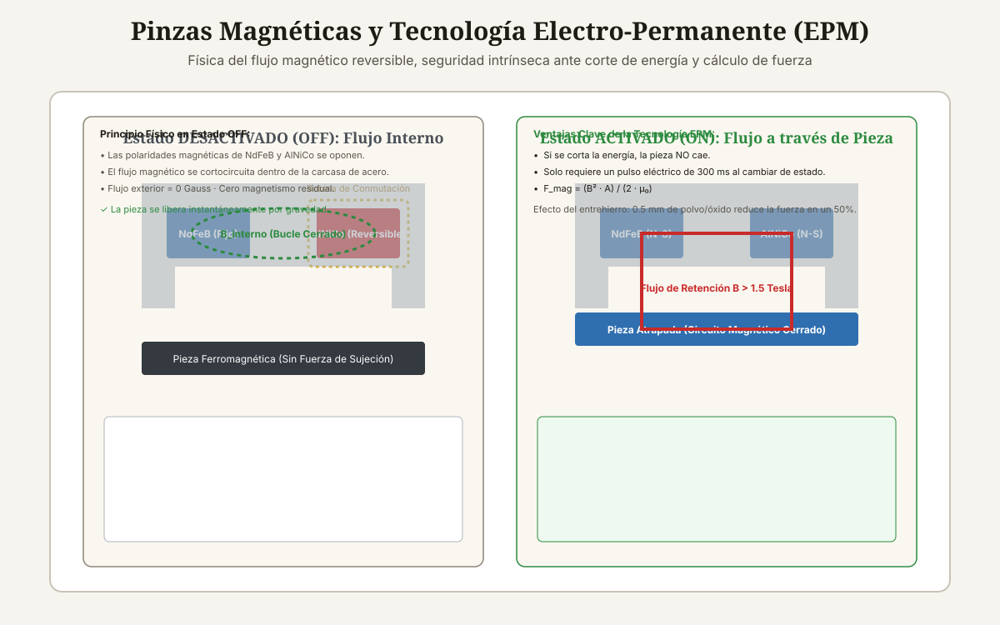

<!DOCTYPE html>
<html lang="es-CL">
<head>
<meta charset="UTF-8">
<meta name="viewport" content="width=device-width, initial-scale=1">

<title>Pinzas Magnéticas para Brazos Robóticos</title>
<meta name="description" content="Guía de pinzas magnéticas para robots: imanes electro-permanentes (EPM) vs electroimanes, seguridad fail-safe, cálculo de fuerza magnética y espesor mínimo.">
<meta name="author" content="Alberto Gallardo">
<meta name="robots" content="index,follow,max-image-preview:large">
<link rel="canonical" href="https://www.ukrabot.cl/blog/pinzas-magneticas-para-brazos-roboticos">

<meta property="og:type" content="article">
<meta property="og:title" content="Pinzas Magnéticas para Brazos Robóticos">
<meta property="og:description" content="Guía de pinzas magnéticas para robots: imanes electro-permanentes (EPM) vs electroimanes, seguridad fail-safe, cálculo de fuerza magnética y espesor mínimo.">
<meta property="og:image" content="https://www.ukrabot.cl/blog/pinzas_magneticas_roboticas_esquema.svg">
<meta property="og:url" content="https://www.ukrabot.cl/blog/pinzas-magneticas-para-brazos-roboticos">
<meta property="og:locale" content="es_CL">
<meta property="og:site_name" content="Blog de Ingeniería Robótica">

<meta name="twitter:card" content="summary_large_image">
<meta name="twitter:title" content="Pinzas Magnéticas para Brazos Robóticos">
<meta name="twitter:description" content="Guía de pinzas magnéticas para robots: imanes electro-permanentes (EPM) vs electroimanes, seguridad fail-safe, cálculo de fuerza magnética y espesor mínimo.">
<meta name="twitter:image" content="https://www.ukrabot.cl/blog/pinzas_magneticas_roboticas_esquema.svg">

<script type="application/ld+json">
{
  "@context": "https://schema.org",
  "@type": "TechArticle",
  "headline": "Pinzas Magnéticas para Brazos Robóticos",
  "description": "Guía de pinzas magnéticas para robots: imanes electro-permanentes (EPM) vs electroimanes, seguridad fail-safe, cálculo de fuerza magnética y espesor mínimo.",
  "author": {
    "@type": "Person",
    "name": "Alberto Gallardo",
    "jobTitle": "Analista Programador Computacional",
    "url": "https://www.ukrabot.cl/about",
    "worksFor": {
      "@type": "Organization",
      "name": "Blog de Ingeniería Robótica"
    }
  },
  "publisher": {
    "@type": "Organization",
    "name": "Blog de Ingeniería Robótica",
    "url": "https://www.ukrabot.cl",
    "logo": {
      "@type": "ImageObject",
      "url": "https://www.ukrabot.cl/logo.png"
    }
  },
  "datePublished": "2026-08-15",
  "dateModified": "2026-08-15",
  "mainEntityOfPage": {
    "@type": "WebPage",
    "@id": "https://www.ukrabot.cl/blog/pinzas-magneticas-para-brazos-roboticos"
  },
  "image": "https://www.ukrabot.cl/blog/pinzas_magneticas_roboticas_esquema.svg",
  "proficiencyLevel": "Intermedio - Avanzado",
  "dependencies": "Física electromagnética, materiales ferromagnéticos, control digital PLC/Robot I/O a 24V DC",
  "wordCount": "3350",
  "inLanguage": "es-CL"
}
</script>

<script type="application/ld+json">
{
  "@context": "https://schema.org",
  "@type": "BreadcrumbList",
  "itemListElement": [
    {
      "@type": "ListItem",
      "position": 1,
      "name": "Inicio",
      "item": "https://www.ukrabot.cl/"
    },
    {
      "@type": "ListItem",
      "position": 2,
      "name": "Blog",
      "item": "https://www.ukrabot.cl/blog/"
    },
    {
      "@type": "ListItem",
      "position": 3,
      "name": "Pinzas Magnéticas para Brazos Robóticos",
      "item": "https://www.ukrabot.cl/blog/pinzas-magneticas-para-brazos-roboticos"
    }
  ]
}
</script>

<script type="application/ld+json">
{
  "@context": "https://schema.org",
  "@type": "FAQPage",
  "mainEntity": [
    {
      "@type": "Question",
      "name": "¿Se pueden levantar múltiples chapas apiladas una a una con un imán?",
      "acceptedAnswer": {
        "@type": "Answer",
        "text": "Sí, utilizando imanes EPM con <strong>control de profundidad de penetración de flujo magnético</strong>. Ajustando la amplitud del pulso eléctrico, se restringe el campo magnético para que solo penetre los primeros 1.5 mm de espesor, levantando exclusivamente la primera chapa del paquete sin arrastrar la segunda."
      }
    },
    {
      "@type": "Question",
      "name": "¿Por qué el acero inoxidable no se puede levantar con pinzas magnéticas?",
      "acceptedAnswer": {
        "@type": "Answer",
        "text": "El acero inoxidable austenítico más común (como el AISI 304 o 316) tiene una estructura cristalina cúbica centrada en las caras (FCC) que no presenta propiedades ferromagnéticas. Solo los aceros inoxidables martensíticos o ferríticos (como el AISI 430) son magnéticos."
      }
    },
    {
      "@type": "Question",
      "name": "¿Qué mantenimiento requiere un imán electro-permanente?",
      "acceptedAnswer": {
        "@type": "Answer",
        "text": "Prácticamente nulo debido a la ausencia de piezas móviles o bobinas sometidas a sobrecalentamiento. Solo se debe mantener limpia la superficie de los polos de acero, eliminando virutas y evitando golpes mecánicos extremos que puedan fracturar las pastillas cerámicas de NdFeB internas."
      }
    },
    {
      "@type": "Question",
      "name": "¿Cómo detectar si la pieza se ha desprendido durante el trayecto?",
      "acceptedAnswer": {
        "@type": "Answer",
        "text": "Los sistemas magnéticos industriales integran <strong>sensores de efecto Hall o bobinas sensoras de flujo (Flux Sensors)</strong> que miden el circuito magnético cerrado. Si el flujo cae por un deslizamiento de la pieza, el sistema dispara una alarma al robot en menos de 5 ms."
      }
    },
    {
      "@type": "Question",
      "name": "¿Es seguro que un operador toque una pinza EPM desactivada?",
      "acceptedAnswer": {
        "@type": "Answer",
        "text": "Completamente. En estado desactivado (OFF), el campo magnético está 100% confinado dentro del cuerpo metálico de la herramienta y no ejerce atracción sobre herramientas ni piezas exteriores."
      }
    }
  ]
}
</script>

<style>
:root{--ink:#f6f4ee;--card:#ffffff;--text:#1e1b15;--muted:#57534a;--quiet:#8b8577;--gold:#a97b23;--gold-bright:#e4c07a;--blue:#2f6fb0;--line:rgba(30,25,15,.09)}
*{box-sizing:border-box}
html{scroll-behavior:smooth}
body{margin:0;background:var(--ink);color:var(--text);font-family:Inter,system-ui,-apple-system,Segoe UI,sans-serif;line-height:1.7;overflow-x:hidden}
img{max-width:100%;height:auto}
a{color:var(--blue);text-underline-offset:3px}
.container{max-width:1050px;margin:auto;padding:0 24px}

/* NAV */
.site-nav{position:sticky;top:0;z-index:50;background:rgba(246,244,238,.95);backdrop-filter:blur(12px);border-bottom:1px solid var(--line)}
.nav-inner{position:relative;display:flex;justify-content:space-between;align-items:center;padding:16px 24px;max-width:1050px;margin:auto;gap:12px}
.logo{color:var(--text);text-decoration:none;font-family:Georgia,serif;font-size:1.35rem;flex-shrink:0}
.logo span{color:var(--gold);font-style:italic}
.nav-links{display:flex;gap:20px;font-size:.86rem}
.nav-links a{color:var(--muted);text-decoration:none;white-space:nowrap}
.nav-links a:hover{color:var(--text)}
.nav-toggle{display:none;flex-direction:column;justify-content:center;gap:5px;width:38px;height:38px;padding:0;background:none;border:1px solid var(--line);border-radius:8px;cursor:pointer;flex-shrink:0}
.nav-toggle span{display:block;width:18px;height:2px;background:var(--text);margin:0 auto;transition:transform .2s ease,opacity .2s ease}
.nav-toggle[aria-expanded="true"] span:nth-child(1){transform:translateY(7px) rotate(45deg)}
.nav-toggle[aria-expanded="true"] span:nth-child(2){opacity:0}
.nav-toggle[aria-expanded="true"] span:nth-child(3){transform:translateY(-7px) rotate(-45deg)}

.progress-bar{position:fixed;top:0;left:0;height:3px;width:0;background:linear-gradient(90deg,var(--gold),var(--blue));z-index:300;transition:width .08s linear}

.hero{position:relative;min-height:50vh;display:flex;align-items:end;overflow:hidden;background:#151310}
.hero>img{position:absolute;inset:0;width:100%;height:100%;object-fit:cover;filter:brightness(.45) contrast(1.08);z-index:0}
.hero:after{content:"";position:absolute;inset:0;background:linear-gradient(180deg,rgba(18,15,11,.35) 0%,rgba(18,15,11,.62) 55%,rgba(18,15,11,.88) 100%);z-index:1}
.hero-inner{position:relative;z-index:2;padding:90px 24px 60px;width:100%;max-width:1050px;margin:auto}
.eyebrow{color:var(--gold-bright);font-size:.76rem;letter-spacing:.13em;text-transform:uppercase;font-weight:700}
.hero h1{font-family:Georgia,serif;font-size:clamp(1.9rem,5.5vw,3.8rem);line-height:1.15;font-weight:400;max-width:900px;margin:18px 0;color:#fff;word-wrap:break-word}
.hero p{color:rgba(245,243,238,.78);max-width:720px;font-size:1.05rem}
.byline{color:rgba(245,243,238,.55);font-size:.85rem;margin-top:14px}
.byline a{color:var(--gold-bright);text-decoration:none}
.byline a:hover{text-decoration:underline}

.article-body{padding-top:64px;padding-bottom:90px}
.article-body h2{font-family:Georgia,serif;font-size:1.9rem;font-weight:400;line-height:1.2;margin:54px 0 16px;color:var(--text)}
.article-body h3{font-size:1.18rem;margin:32px 0 8px;color:var(--text)}
.article-body p{color:var(--muted);margin:0 0 20px}
.article-body li{color:var(--muted);margin:8px 0}
.article-body strong{color:var(--text)}

.toc,.note,.cta{background:linear-gradient(135deg,rgba(169,123,35,.08),rgba(47,111,176,.06));border:1px solid var(--line);border-radius:14px;padding:24px;margin:28px 0}
.toc h2{font-family:inherit;font-size:1.05rem;margin:0 0 10px}
.toc ol{margin:0;padding-left:22px}
.toc a{color:var(--muted);text-decoration:none}
.toc a:hover{color:var(--gold)}

.note{border-left:4px solid var(--gold)}
.note strong{color:var(--text)}
.warning{background:linear-gradient(135deg,rgba(178,40,30,.08),rgba(178,40,30,.03));border:1px solid rgba(178,40,30,.25);border-left:4px solid #b2281e;border-radius:14px;padding:24px;margin:28px 0}
.warning strong{color:#7a1c14}

.article-img{margin:0 0 42px;border:1px solid var(--line);border-radius:14px;overflow:hidden}
.article-img img{width:100%;display:block}
.caption{padding:12px 16px;background:var(--card);color:var(--quiet);font-size:.82rem}

.table-wrap{overflow-x:auto;-webkit-overflow-scrolling:touch;border:1px solid var(--line);border-radius:12px;margin:22px 0;box-shadow:0 8px 24px rgba(30,25,15,.06)}
table{border-collapse:collapse;width:100%;min-width:650px;background:var(--card)}
th,td{text-align:left;padding:13px 14px;border-bottom:1px solid var(--line);color:var(--muted)}
th{background:#faf7f0;color:var(--text);font-size:.78rem;text-transform:uppercase;letter-spacing:.06em}
td:first-child{color:var(--text);font-weight:600}

pre{overflow-x:auto;-webkit-overflow-scrolling:touch;background:#14121a;border:1px solid rgba(255,255,255,.08);border-radius:12px;padding:20px;color:#e8d9b6;line-height:1.5;font-size:.88rem;white-space:pre-wrap;word-break:break-word}
code{font-family:ui-monospace,SFMono-Regular,Consolas,monospace}

.faq{border-bottom:1px solid var(--line)}
details{border-top:1px solid var(--line);padding:16px 0}
summary{cursor:pointer;color:var(--text);font-weight:600}
details p{padding-top:10px;margin-bottom:0}

.footer-nav{border-top:1px solid var(--line);padding-top:34px;margin-top:54px;display:flex;justify-content:space-between;gap:20px;flex-wrap:wrap}
.footer-nav a{color:var(--muted);text-decoration:none;max-width:100%}
.footer-nav a:hover{color:var(--gold)}

.disclosure{font-size:.78rem;color:var(--quiet);border-top:1px solid var(--line);padding-top:16px;margin-top:34px}
.cta h3{margin:0 0 8px;font-size:1.05rem;color:var(--text)}
.cta p{margin:0}

/* ===== RESPONSIVE ===== */
@media(max-width:760px){
  .nav-toggle{display:flex}
  .nav-links{
    position:absolute;
    top:100%;
    left:0;
    right:0;
    flex-direction:column;
    align-items:flex-start;
    gap:2px;
    background:rgba(246,244,238,.98);
    backdrop-filter:blur(12px);
    border-bottom:1px solid var(--line);
    padding:8px 24px 18px;
    box-shadow:0 12px 24px rgba(30,25,15,.08);
    display:none;
  }
  .nav-links.open{display:flex}
  .nav-links a{padding:10px 0;width:100%}
}

@media(max-width:700px){
  .hero-inner{padding:70px 20px 40px}
  .article-body h2{font-size:1.55rem;margin:40px 0 14px}
  .article-body{padding-top:44px;padding-bottom:60px}
}

@media(max-width:480px){
  .container{padding:0 16px}
  .nav-inner{padding:14px 16px}
  .logo{font-size:1.15rem}
  .hero{min-height:55vh}
  .hero-inner{padding:60px 16px 35px}
  .hero p{font-size:.95rem}
  .eyebrow{font-size:.7rem}
  .article-body h2{font-size:1.35rem}
  .article-body h3{font-size:1.05rem}
  .toc,.note,.cta,.warning{padding:16px;margin:20px 0}
  .toc ol{padding-left:18px}
  th,td{padding:10px 10px;font-size:.82rem}
  table{min-width:560px}
  pre{padding:14px;font-size:.78rem}
  .article-img .caption{font-size:.78rem;padding:10px 12px}
  .disclosure{font-size:.74rem}
  .footer-nav{gap:12px}
  .footer-nav a{font-size:.9rem}
}
</style>
  <script>
  window.dataLayer = window.dataLayer || [];
  function gtag(){dataLayer.push(arguments);}
  gtag('consent', 'default', {
    'ad_storage': 'denied',
    'ad_user_data': 'denied',
    'ad_personalization': 'denied',
    'analytics_storage': 'denied',
    'wait_for_update': 500
  });
  (function(){
    try {
      var c = document.cookie.match(/(?:^|;\s*)rel_consent=([^;]+)/);
      if (c && c[1] === 'granted') {
        gtag('consent', 'update', {
          'ad_storage': 'granted',
          'ad_user_data': 'granted',
          'ad_personalization': 'granted',
          'analytics_storage': 'granted'
        });
      }
    } catch (e) {}
  })();
</script>
  <script async src="https://pagead2.googlesyndication.com/pagead/js/adsbygoogle.js?client=ca-pub-7032484018692343" crossorigin="anonymous"></script>
  <!-- Google tag (gtag.js) -->
  <script async src="https://www.googletagmanager.com/gtag/js?id=G-1ZVHF8X35Q"></script>
  <script>
    window.dataLayer = window.dataLayer || [];
    function gtag(){dataLayer.push(arguments);}
    gtag('js', new Date());
    gtag('config', 'G-1ZVHF8X35Q');
  </script>

</head>
<body>

<div class="progress-bar" id="progress-bar" aria-hidden="true"></div>

<nav class="site-nav" aria-label="Navegación del sitio">
  <div class="nav-inner">
    <a class="logo" href="/">Robótica <span>Ingeniería</span></a>
    <button class="nav-toggle" id="nav-toggle" aria-expanded="false" aria-controls="nav-links" aria-label="Abrir menú de navegación">
      <span></span><span></span><span></span>
    </button>
    <div class="nav-links" id="nav-links">
      <a href="/">Inicio</a>
      <a href="/#categories">Tutoriales</a>
      <a href="/#proyecto-destacado">Proyecto del Mes</a>
      <a href="/about">Sobre Nosotros</a>
      <a href="/contact">Contacto</a>
    </div>
  </div>
</nav>

<header class="hero">
  
  <div class="hero-inner">
    <div class="eyebrow">Efectores Finales y Pinzas · Actualizado el <time datetime="2026-08-15">15 de agosto de 2026</time></div>
    <h1>Pinzas Magnéticas para Brazos Robóticos</h1>
    <p>Manipulación de piezas ferromagnéticas: electroimanes convencionales vs imanes electro-permanentes (EPM), cálculo de retención magnética, impacto del entrehierro y desmagnetización activa.</p>
    <p class="byline">Por <a href="/about">Alberto Gallardo</a>, Analista Programador Computacional · 19 min de lectura</p>
  </div>
</header>

<main class="container article-body">
<article>

<div class="article-img">
  
  <div class="caption">Circuito magnético EPM: estado desactivado con cortocircuito magnético interno vs estado activado con flujo cerrándose a través de la pieza.</div>
</div>

<nav class="toc" aria-label="Índice del contenido">
  <h2>Contenido de la guía</h2>
  <ol>
    <li><a href="#cuando-usar-magneticas">Cuándo elegir sujeción magnética frente a pinzas mecánicas o de vacío</a></li>
<li><a href="#electroimanes-vs-epm">Tecnología: Electroimanes convencionales vs Imanes Electro-Permanentes (EPM)</a></li>
<li><a href="#calculo-fuerza-magnetica">Cálculo de la fuerza de retención y factores reductores</a></li>
<li><a href="#desmagnetizacion-activa">Manejo de magnetismo residual y ciclo de desmagnetización</a></li>
<li><a href="#faq">Preguntas frecuentes</a></li>
  </ol>
</nav>

<section id="cuando-usar-magneticas">
<h2>Cuándo elegir sujeción magnética frente a pinzas mecánicas o de vacío</h2>

<p>Las pinzas magnéticas son la solución óptima cuando se manipulan <strong>piezas de acero al carbono, hierro fundido o aleaciones ferromagnéticas</strong> con geometrías complejas, perforaciones múltiples o superficies irregulares donde las ventosas de vacío sufren fugas de aire masivas y las pinzas mecánicas de dos dedos carecen de espacio para cerrar sus mordazas.</p>
<p>Sus ventajas industriales clave son:</p>
<ul>
  <li><strong>Sujeción desde una sola cara (Single-Sided Grasping):</strong> No requiere rodear el objeto ni acceder a sus bordes laterales, permitiendo desapilar chapas apretadas dentro de contenedores (Bin Picking).</li>
  <li><strong>Inmune al polvo, aceite de estampación y virutas:</strong> No depende de un sellado hermético como el vacío.</li>
  <li><strong>Fuerzas de sujeción extremas en volumen mínimo:</strong> Capaces de levantar cientos de kilogramos con un módulo del tamaño de un puño.</li>
</ul>

</section>
<section id="electroimanes-vs-epm">
<h2>Tecnología: Electroimanes convencionales vs Imanes Electro-Permanentes (EPM)</h2>

<p>Comprender la diferencia entre un electroimán y un imán electro-permanente (EPM) es un requisito crítico de seguridad:</p>
<div class="table-wrap">
<table>
<thead>
<tr>
<th>Criterio Técnico</th>
<th>Electroimán Convencional (EM)</th>
<th>Imán Electro-Permanente (EPM)</th>
</tr>
</thead>
<tbody>
<tr>
<td><strong>Principio Físico</strong></td>
<td>Bobina de cobre continua sobre núcleo de hierro dulce.</td>
<td>Combinación de imanes permanentes de Neodimio (NdFeB) y AlNiCo reversible con bobina de pulso.</td>
</tr>
<tr>
<td><strong>Consumo Eléctrico</strong></td>
<td><strong>Continuo:</strong> Debe estar energizado al 100% mientras sostiene la pieza.</td>
<td><strong>Cero en reposo:</strong> Solo consume un pulso de 300 ms al conmutar de estado.</td>
</tr>
<tr>
<td><strong>Seguridad ante Corte Eléctrico</strong></td>
<td><strong style="color:#c92a2a;">Peligro Crítico:</strong> Si se corta la luz, la pieza cae inmediatamente. Requiere costoso banco de baterías UPS.</td>
<td><strong style="color:#2b8a3e;">100% Fail-Safe:</strong> La fuerza magnética es intrínseca y permanente. Cero riesgo de caída por falla eléctrica.</td>
</tr>
<tr>
<td><strong>Calentamiento Térmico</strong></td>
<td>Alto (Efecto Joule en la bobina limita el Duty Cycle).</td>
<td><strong>Cero calentamiento:</strong> Permite ciclos de trabajo continuos del 100%.</td>
</tr>
<tr>
<td><strong>Magnetismo Residual</strong></td>
<td>Medio a alto tras desenergizar.</td>
<td><strong>Cero:</strong> Pulso de desmagnetización activa cancela el campo residual.</td>
</tr>
</tbody>
</table>
</div>

</section>

<div class="ad-slot" style="margin:34px 0;min-height:280px;text-align:center;">
  <!-- ANUNCIO UKRABOT -->
  <ins class="adsbygoogle"
       style="display:block"
       data-ad-client="ca-pub-7032484018692343"
       data-ad-slot="7434550690"
       data-ad-format="auto"
       data-full-width-responsive="true"></ins>
  <script>(adsbygoogle = window.adsbygoogle || []).push({});</script>
</div>
<section id="calculo-fuerza-magnetica">
<h2>Cálculo de la fuerza de retención y factores reductores</h2>

<div class="note"><strong>Ecuación de Fuerza Magnética de Maxwell:</strong>
$$F_{mag} = rac{B^2 \cdot A}{2 \cdot \mu_0}$$
Donde:
<ul>
  <li>$B$: Densidad de flujo magnético en la interfaz de contacto (Tesla, típicamente $1.0	ext{ a }1.6	ext{ T}$ en núcleos saturados).</li>
  <li>$A$: Área neta de contacto de los polos magnéticos ($	ext{m}^2$).</li>
  <li>$\mu_0$: Permeabilidad magnética del vacío ($4\pi 	imes 10^{-7}	ext{ H/m}$).</li>
</ul>
</div>

<h3>Los 4 Factores Reductores Críticos en la Práctica:</h3>
<ol>
  <li><strong>Entrehierro (Air Gap):</strong> El polvo, la pintura, el óxido o una pequeña curvatura crean un espacio de aire no magnético. <strong>Un entrehierro de apenas 0.5 mm reduce la fuerza de sujeción en un 50%</strong>; un entrehierro de 1.5 mm la reduce en más del 80%.</li>
  <li><strong>Espesor del Material (Saturación Magnética):</strong> Para desarrollar la máxima fuerza, la pieza debe ser lo suficientemente gruesa para canalizar todo el flujo sin saturarse (típicamente espesor $t > 8	ext{ mm}$ en acero al carbono). En chapas delgadas de 1 mm, la fuerza cae al 30% de la nominal.</li>
  <li><strong>Composición Metalúrgica:</strong> Acero bajo en carbono (AISI 1018): 100% fuerza. Acero templado o fundición gris: 70-80% fuerza. Acero inoxidable austenítico (AISI 304/316): <strong>0% fuerza (No magnético)</strong>.</li>
  <li><strong>Temperatura de la Pieza:</strong> La remanencia magnética decae al acercarse a la temperatura de Curie ($T_{Curie} pprox 310	ext{ }^\circ	ext{C}$ para NdFeB; $T_{Curie} pprox 800	ext{ }^\circ	ext{C}$ para AlNiCo).</li>
</ol>

</section>
<section id="desmagnetizacion-activa">
<h2>Manejo de magnetismo residual y ciclo de desmagnetización</h2>

<p>Un problema recurrente al manipular piezas de acero con alto contenido de carbono es que retienen magnetismo remanente tras soltarlas, lo que provoca que recojan virutas metálicas del taller o se peguen indeseadamente a la mesa de trabajo.</p>
<p>Las controladoras EPM modernas resuelven esto ejecutando un <strong>ciclo de desmagnetización por corriente alterna decreciente</strong> en menos de 400 milisegundos: aplican una serie de pulsos de corriente de polaridad invertida con amplitud decreciente exponencialmente ($+I_{max}, -0.7I, +0.4I, -0.2I, 0$), desordenando los dominios magnéticos de Weiss de la pieza hasta dejar un magnetismo residual prácticamente nulo (&lt; 2 Gauss).</p>

</section>


<section class="faq" id="faq" aria-label="Preguntas frecuentes">
<h2>Preguntas Frecuentes</h2>
<div class="faq">
<details><summary>¿Se pueden levantar múltiples chapas apiladas una a una con un imán?</summary><p>Sí, utilizando imanes EPM con <strong>control de profundidad de penetración de flujo magnético</strong>. Ajustando la amplitud del pulso eléctrico, se restringe el campo magnético para que solo penetre los primeros 1.5 mm de espesor, levantando exclusivamente la primera chapa del paquete sin arrastrar la segunda.</p></details>
<details><summary>¿Por qué el acero inoxidable no se puede levantar con pinzas magnéticas?</summary><p>El acero inoxidable austenítico más común (como el AISI 304 o 316) tiene una estructura cristalina cúbica centrada en las caras (FCC) que no presenta propiedades ferromagnéticas. Solo los aceros inoxidables martensíticos o ferríticos (como el AISI 430) son magnéticos.</p></details>
<details><summary>¿Qué mantenimiento requiere un imán electro-permanente?</summary><p>Prácticamente nulo debido a la ausencia de piezas móviles o bobinas sometidas a sobrecalentamiento. Solo se debe mantener limpia la superficie de los polos de acero, eliminando virutas y evitando golpes mecánicos extremos que puedan fracturar las pastillas cerámicas de NdFeB internas.</p></details>
<details><summary>¿Cómo detectar si la pieza se ha desprendido durante el trayecto?</summary><p>Los sistemas magnéticos industriales integran <strong>sensores de efecto Hall o bobinas sensoras de flujo (Flux Sensors)</strong> que miden el circuito magnético cerrado. Si el flujo cae por un deslizamiento de la pieza, el sistema dispara una alarma al robot en menos de 5 ms.</p></details>
<details><summary>¿Es seguro que un operador toque una pinza EPM desactivada?</summary><p>Completamente. En estado desactivado (OFF), el campo magnético está 100% confinado dentro del cuerpo metálico de la herramienta y no ejerce atracción sobre herramientas ni piezas exteriores.</p></details>
</div>
</section>

<p class="disclosure">Este artículo es contenido editorial independiente: no contiene ubicaciones patrocinadas ni enlaces de afiliado. El código, esquemas y parámetros de diseño son de carácter técnico y deben validarse con las hojas de datos de los fabricantes correspondientes. Si detectas un error técnico o tienes una sugerencia, puedes <a href="/contact">contactarnos directamente</a>.</p>

<div class="cta">
  <h3>Continúa explorando tutoriales técnicos</h3>
  <p>Aprende a elegir el efector final óptimo para cualquier aplicación en nuestra guía metodológica.</p>
</div>

<div class="footer-nav">
  <a href="/blog/pinzas-de-vacio-para-brazos-roboticos">← Pinzas de Vacío para Brazos Robóticos</a>
  <a href="/blog/como-seleccionar-un-efector-final-para-robots">Cómo Seleccionar un Efector Final para Robots →</a>
</div>

</article>

<section class="editorial-sources" aria-label="Fuentes primarias" style="margin:48px 0 24px;padding:22px 24px;background:#ffffff;border:1px solid rgba(30,25,15,.09);border-radius:12px;">
<h2 style="margin-top:0;font-family:Georgia,serif;font-weight:400;font-size:1.4rem;color:#1e1b15;">Fuentes primarias y lecturas recomendadas</h2>
<p style="font-size:.9rem;color:#57534a;">Hojas de datos oficiales, estándares internacionales de ingeniería y documentación técnica citada en este artículo.</p>
<ul>
<li><a href="https://www.braillon.com/" target="_blank" rel="noopener noreferrer">Braillon Magnetics — Permanent and Electro-Permanent Magnetic Workholding Engineering Manual</a></li>
<li><a href="https://magswitch.com/" target="_blank" rel="noopener noreferrer">Magswitch Automation Technology — Magnetic Gripper Applications and Flux Depth Control</a></li>
<li><a href="https://ieeexplore.ieee.org/book/5237731" target="_blank" rel="noopener noreferrer">Bozorth, R. M. — Ferromagnetism (IEEE Press Classic Reissue)</a></li>
<li><a href="https://www.iso.org/standard/41571.html" target="_blank" rel="noopener noreferrer">ISO 10218-2:2011 — Robots and robotic devices — Safety requirements for industrial robots — Part 2: Robot systems and integration</a></li>
</ul>
<p style="font-size:.75rem;color:#8b8577;margin-bottom:0;">Enlaces y especificaciones revisadas: 15 de agosto de 2026.</p>
</section>
</main>

<footer class="container" style="border-top:1px solid var(--line);padding-top:34px;padding-bottom:45px;color:var(--quiet);font-size:.85rem">
  <p>Blog de Ingeniería Robótica · Tutoriales prácticos de Arduino, robótica, automatización y electrónica aplicada, escritos y mantenidos por Alberto Gallardo.</p>
  <p style="margin-top:10px;">
    <a href="/about" style="color:var(--muted);text-decoration:none;margin-right:16px;">Sobre Nosotros</a>
    <a href="/contact" style="color:var(--muted);text-decoration:none;margin-right:16px;">Contacto</a>
    <a href="/privacy" style="color:var(--muted);text-decoration:none;">Política de Privacidad</a>
  </p>
  <div style="max-width:1100px;margin:28px auto 0;padding-top:20px;border-top:1px solid rgba(30,25,15,.09);display:flex;flex-wrap:wrap;gap:18px;align-items:center;justify-content:space-between;">
      <p style="font-size:0.8rem;opacity:0.6;margin:0;">&copy; 2023&ndash;2026 Blog de Ingeniería Robótica · Alberto Gallardo. Todos los derechos reservados.</p>
      <nav aria-label="Enlaces legales y de empresa" style="display:flex;flex-wrap:wrap;gap:18px;">
        <a href="/about" style="font-size:0.82rem;opacity:0.75;text-decoration:none;color:inherit;">Sobre Nosotros</a>
        <a href="/contact" style="font-size:0.82rem;opacity:0.75;text-decoration:none;color:inherit;">Contacto</a>
        <a href="/privacy" style="font-size:0.82rem;opacity:0.75;text-decoration:none;color:inherit;">Política de Privacidad</a>
        <a href="/terms" style="font-size:0.82rem;opacity:0.75;text-decoration:none;color:inherit;">Términos y Condiciones</a>
      </nav>
  </div>
</footer>

<div id="rel-consent" role="dialog" aria-modal="false" aria-labelledby="rel-consent-title" hidden
     style="position:fixed;left:0;right:0;bottom:0;z-index:9999;background:#ffffff;border-top:1px solid rgba(30,25,15,0.12);box-shadow:0 -8px 32px rgba(30,25,15,0.18);padding:20px 24px;font-family:Inter,system-ui,-apple-system,Segoe UI,sans-serif;">
  <div style="max-width:1100px;margin:0 auto;display:flex;flex-wrap:wrap;gap:20px;align-items:center;justify-content:space-between;">
    <div style="flex:1;min-width:260px;">
      <p id="rel-consent-title" style="margin:0 0 6px;font-size:0.95rem;font-weight:600;color:#1e1b15;">Usamos cookies</p>
      <p style="margin:0;font-size:0.85rem;line-height:1.5;color:#57534a;">
        Usamos cookies para operar este sitio y, con tu consentimiento, para mostrar anuncios personalizados a través de Google AdSense.
        Puedes rechazar y seguir leyendo todo el contenido. Consulta nuestra
        <a id="rel-consent-privacy" href="/privacy" style="color:#2f6fb0;">Política de Privacidad</a>.
      </p>
    </div>
    <div style="display:flex;gap:10px;flex-wrap:wrap;">
      <button type="button" id="rel-consent-decline"
        style="padding:11px 22px;border-radius:999px;border:1px solid rgba(30,25,15,0.25);background:transparent;color:#1e1b15;font-family:inherit;font-weight:600;font-size:0.85rem;cursor:pointer;">Rechazar</button>
      <button type="button" id="rel-consent-accept"
        style="padding:11px 22px;border-radius:999px;border:none;background:#a97b23;color:#ffffff;font-family:inherit;font-weight:700;font-size:0.85rem;cursor:pointer;">Aceptar todo</button>
    </div>
  </div>
</div>
<script>
(function () {
  var NAME = 'rel_consent';
  var box = document.getElementById('rel-consent');
  if (!box) return;

  function read() {
    var m = document.cookie.match(/(?:^|;\s*)rel_consent=([^;]+)/);
    return m ? m[1] : null;
  }
  function write(v) {
    var d = new Date();
    d.setTime(d.getTime() + 180 * 24 * 60 * 60 * 1000);
    document.cookie = NAME + '=' + v + ';expires=' + d.toUTCString() + ';path=/;SameSite=Lax';
  }

  if (!read()) box.hidden = false;

  function decide(granted) {
    write(granted ? 'granted' : 'denied');
    if (typeof gtag === 'function') {
      gtag('consent', 'update', {
        'ad_storage': granted ? 'granted' : 'denied',
        'ad_user_data': granted ? 'granted' : 'denied',
        'ad_personalization': granted ? 'granted' : 'denied',
        'analytics_storage': granted ? 'granted' : 'denied'
      });
    }
    box.hidden = true;
  }

  document.getElementById('rel-consent-accept').addEventListener('click', function () { decide(true); });
  document.getElementById('rel-consent-decline').addEventListener('click', function () { decide(false); });
})();
</script>
<script>
(function () {
  var bar = document.getElementById('progress-bar');
  if (!bar) return;
  function update() {
    var doc = document.documentElement;
    var max = doc.scrollHeight - doc.clientHeight;
    var pct = max > 0 ? (window.scrollY || doc.scrollTop) / max * 100 : 0;
    bar.style.width = pct + '%';
  }
  window.addEventListener('scroll', update, { passive: true });
  window.addEventListener('resize', update);
  update();
})();
</script>
<script>
(function () {
  var toggle = document.getElementById('nav-toggle');
  var links = document.getElementById('nav-links');
  if (!toggle || !links) return;

  toggle.addEventListener('click', function () {
    var expanded = toggle.getAttribute('aria-expanded') === 'true';
    toggle.setAttribute('aria-expanded', String(!expanded));
    links.classList.toggle('open');
  });

  links.querySelectorAll('a').forEach(function (a) {
    a.addEventListener('click', function () {
      toggle.setAttribute('aria-expanded', 'false');
      links.classList.remove('open');
    });
  });

  document.addEventListener('click', function (e) {
    if (!links.contains(e.target) && !toggle.contains(e.target)) {
      toggle.setAttribute('aria-expanded', 'false');
      links.classList.remove('open');
    }
  });
})();
</script>
</body>
</html>